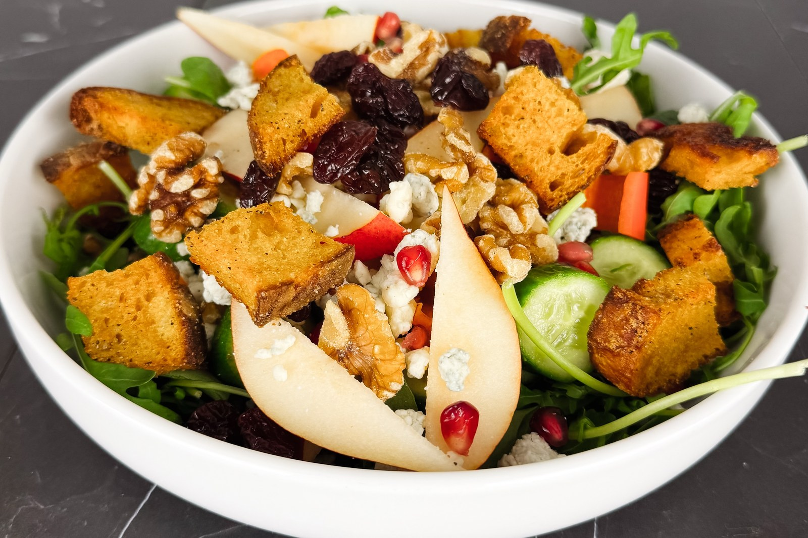

She’s the Goose

Suppers · Autumn
Arugula, red pear, pomegranate and blue cheese in a honey-Dijon vinaigrette, finished with croutons cut from pumpkin sourdough.
Peppery arugula, sweet red pear, tart pomegranate and dried cherries, salty blue cheese, and croutons cut from the pumpkin sourdough. The croutons and dressing can be made ahead, so once the pear is sliced it comes together in a few minutes.
Pumpkin sourdough croutons
Honey-Dijon vinaigrette
For the salad
Make the croutons. Toss the bread with the olive oil, salt, pepper and herbs. Air fry at 375°F for about 7 minutes, shaking the basket halfway, until golden and crisp at the edges. Let them cool.
Make the dressing. Whisk together both vinegars, the Dijon, honey, garlic, salt and pepper. Slowly whisk in the olive oil, or shake everything together in a jar. Taste and adjust.
Prepare the fruit and vegetables. Slice the cucumber and pepper. Slice the pear last, just before serving, so it stays pale.
Assemble. Put the arugula in a wide bowl and toss with about half the dressing. Scatter the pear, cucumber, pepper, dried cherries, walnuts and pomegranate seeds over the top, then the blue cheese.
Finish and serve. Add the croutons at the very end so they stay crisp, and pass the rest of the dressing at the table.
A squeeze of fresh lemon in the dressing brightens it, especially if your pears are very sweet.
Make ahead. The croutons keep in an airtight container for a day or two, and the dressing keeps in a jar in the refrigerator for several days; shake it well before using.
No air fryer? Bake the croutons on a sheet pan at 375°F for 12 to 15 minutes, tossing halfway, until golden.